S05 — Why Is the Sky Blue?
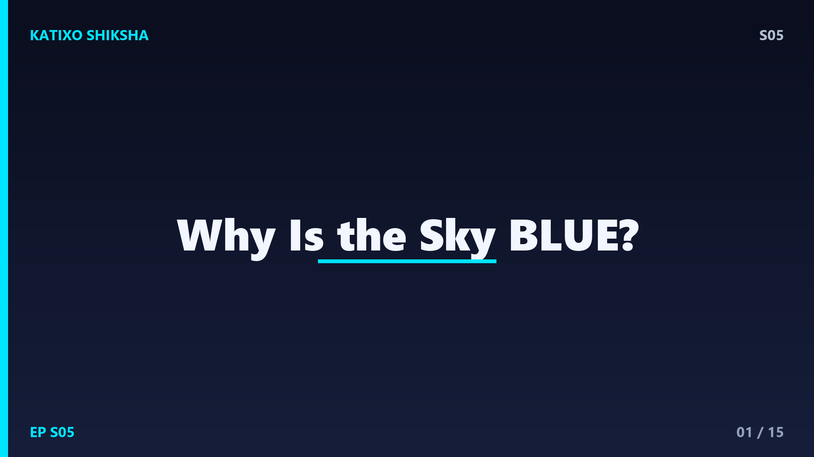
Slide 1Here's a question that sounds like something a 5-year-old would ask — why is the sky blue? Simple, right? Except — when scientists tried to answer this properly, it took over a hundred years of physics, involved Lord Rayleigh, Einstein, and Maxwell, and the explanation touches on electromagnetic theory, quantum mechanics, and human biology. A question that seems childish turns out to be genuinely deep. That's the beauty of science — the simplest questions often have the most complex answers. Today on Katixo KhojLab, we're going deep on this one. Let's go!
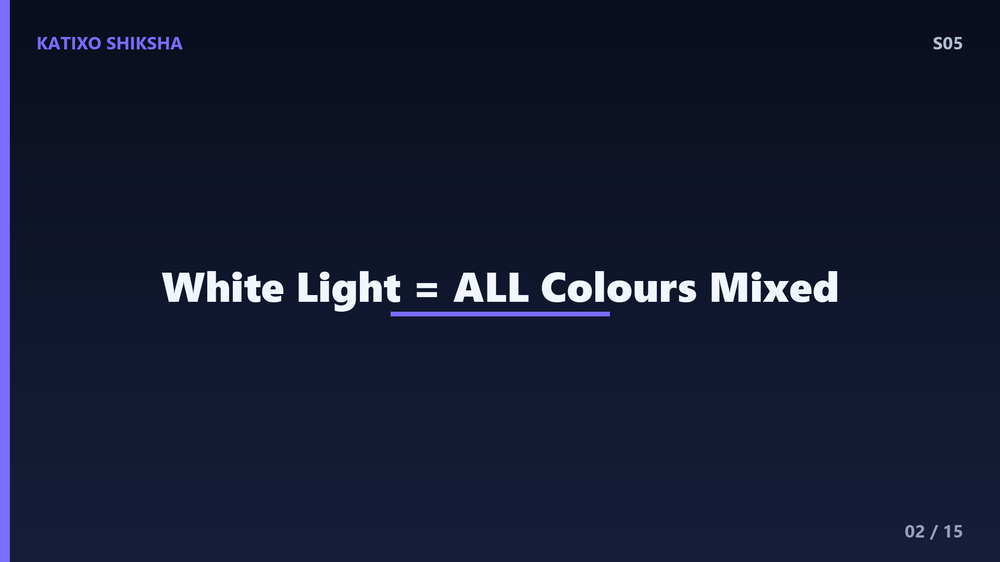
Slide 2To understand why the sky is blue, you first need to understand what sunlight actually is. Sunlight looks white, but it's not. White light is a mixture of ALL visible colours — red, orange, yellow, green, blue, indigo, violet. Isaac Newton proved this in 1666 by passing sunlight through a glass prism. The prism separated white light into a rainbow — a spectrum. Each colour has a different wavelength. Red light has the longest wavelength — about 700 nanometres. Violet has the shortest — about 380 nanometres. Blue is in between at about 475 nanometres. Remember — shorter wavelength means higher frequency and more energy.
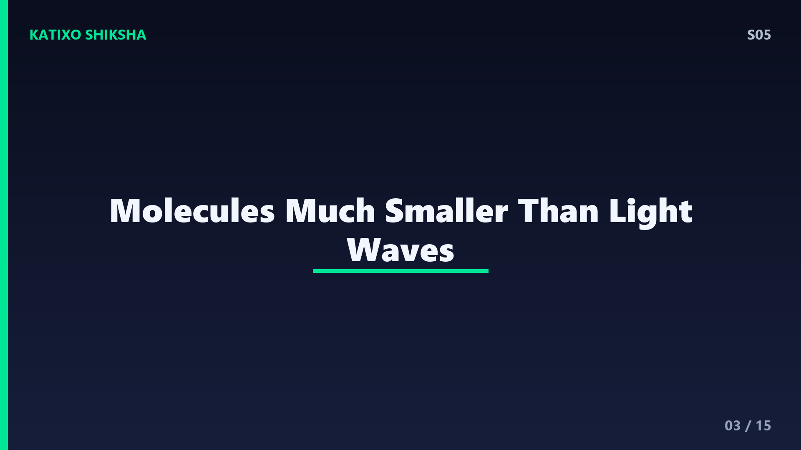
Slide 3Now, sunlight enters Earth's atmosphere. Our atmosphere is made of gases — mainly nitrogen at 78 percent and oxygen at 21 percent, plus small amounts of argon, carbon dioxide, and water vapour. These gas molecules are incredibly tiny — nitrogen molecules are about 0.3 nanometres across. When light waves encounter particles much smaller than their wavelength, something fascinating happens. The light doesn't just pass through or bounce off like a ball hitting a wall. Instead, the light wave causes the electrons in the molecule to vibrate, and the molecule re-emits the light in a random direction. This is called scattering.
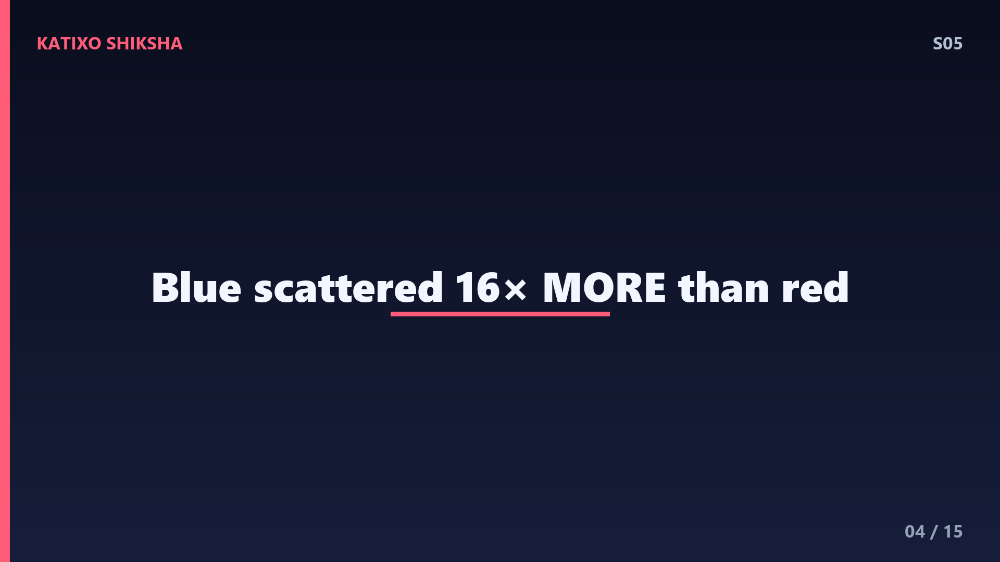
Slide 4Here's the critical physics. Not all colours scatter equally. The amount of scattering depends on the wavelength of the light, and it follows a very specific mathematical relationship discovered by Lord Rayleigh in 1871. Rayleigh scattering says that the intensity of scattered light is inversely proportional to the fourth power of the wavelength. Let that sink in — the FOURTH power. So if blue light has roughly half the wavelength of red light, it gets scattered 2 to the power 4, which is 16 times more. Blue light is scattered roughly 16 times more than red light. That's not a small difference. That's massive.
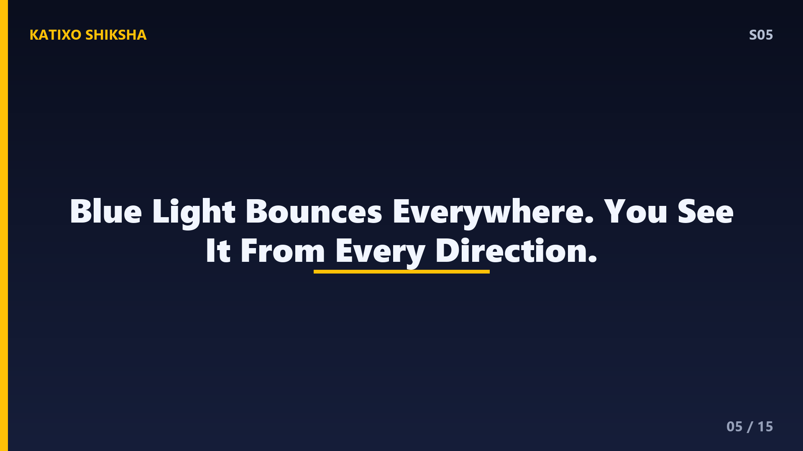
Slide 5So here's what's happening right above you. Sunlight — containing all colours — enters the atmosphere. It hits nitrogen and oxygen molecules. Blue and violet light get scattered the most, bouncing around in all directions across the sky. Red, orange, and yellow light mostly pass straight through without being scattered much. When you look up at the sky — in any direction away from the sun — the light reaching your eyes is mostly this scattered blue light, coming at you from all over the sky. The sky is blue because the atmosphere is acting like a filter that scatters blue light everywhere.
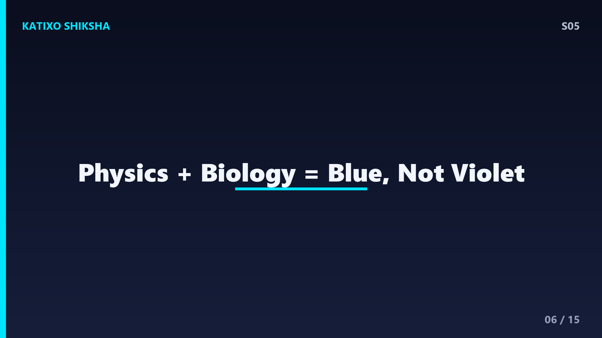
Slide 6But wait — there's a problem. Violet light has an even shorter wavelength than blue. By Rayleigh's formula, violet should be scattered even MORE than blue. So why isn't the sky violet? This is where human biology enters the physics story. There are two reasons. First, the sun emits more blue light than violet light — the solar spectrum peaks in the blue-green range, so there's simply more blue photons available to scatter. Second, and more importantly, your eyes are much more sensitive to blue than violet. The cone cells in your retina that detect colour respond strongly to blue but poorly to violet. So even though violet is scattered more, your brain perceives the sky as blue. The answer isn't just physics — it's physics plus biology.
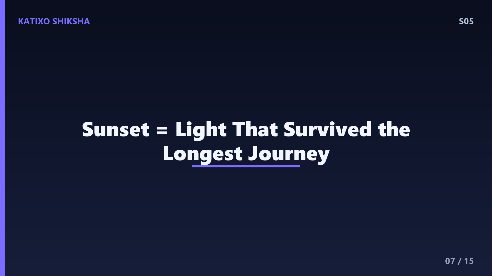
Slide 7Now let's tackle sunsets. During the day, sunlight passes through a relatively thin slice of atmosphere to reach you. But at sunrise and sunset, the sun is near the horizon, and its light has to travel through a much longer path of atmosphere — sometimes 30 times longer. Over this extended path, almost all the blue and violet light gets scattered away before it reaches you. What's left? The longer wavelengths — red, orange, and yellow. This is why sunsets are red and orange. You're literally seeing the light that survived the longest atmospheric journey. Pollution and dust particles enhance this effect because larger particles scatter all wavelengths, creating more vivid, redder sunsets.
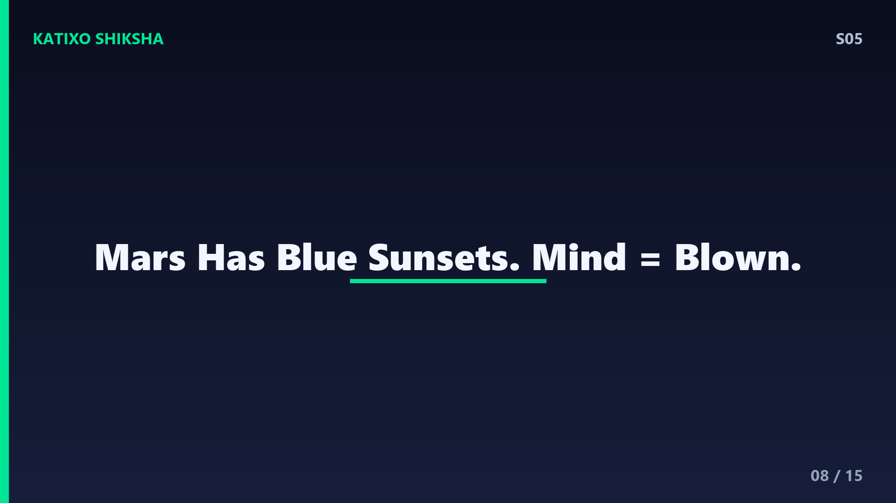
Slide 8Here's an interesting thought experiment — what colour is the sky on other planets? On Mars, the atmosphere is thin and full of iron oxide dust — basically rust particles. These larger particles scatter light differently than gas molecules. The Martian sky during the day is actually a butterscotch or salmon pink colour. And here's the mind-bending part — sunsets on Mars are BLUE. The opposite of Earth. The iron oxide dust forward-scatters blue light toward the observer when the sun is near the horizon. NASA's Curiosity and Perseverance rovers have photographed these blue Martian sunsets. On a planet with no atmosphere, like Mercury or the Moon, the sky is simply black — even during the day — because there are no molecules to scatter light.
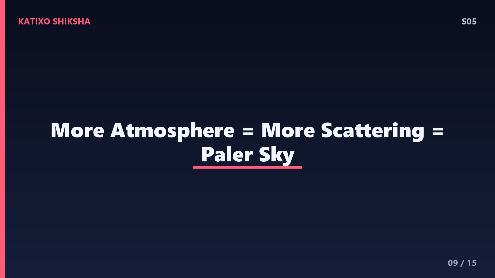
Slide 9Rayleigh scattering also explains why the sky near the horizon often looks pale or whitish, while the sky directly overhead is the deepest blue. Light from near the horizon has to pass through more atmosphere to reach your eyes, similar to sunset geometry. Over that longer path, even some of the blue light gets scattered out, and multiple-scattering events mix in other colours, making the light more white. Directly overhead, the atmosphere is thinnest, scattering is clean and dominated by blue, giving you the purest blue colour. Next time you're outside, compare the horizon to the zenith — you'll see this gradient clearly.
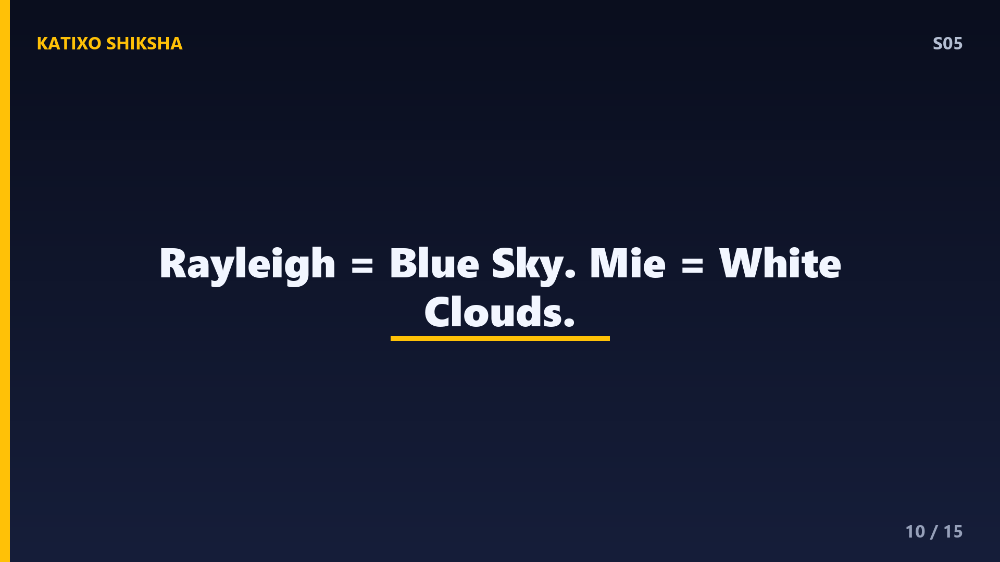
Slide 10There's another type of scattering you should know about — Mie scattering. Rayleigh scattering applies when particles are much smaller than the wavelength of light, like gas molecules. But when particles are similar in size to the wavelength — like water droplets in clouds, dust, or pollution — Mie scattering takes over. Mie scattering scatters all wavelengths roughly equally. This is why clouds are white — the water droplets scatter red, blue, green, everything equally. Equal mix of all colours equals white. And why rain clouds look grey or dark? They're so thick that less light passes through overall.
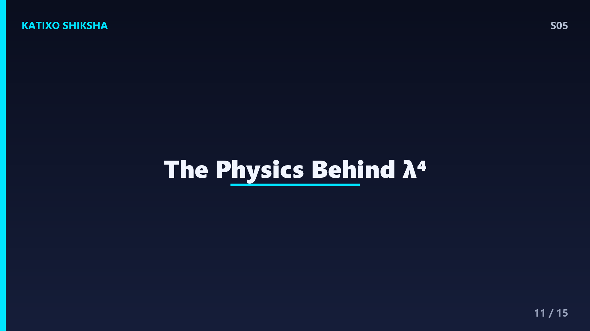
Slide 11Let's go deeper into the physics. Why does Rayleigh scattering have that fourth-power dependence on wavelength? This comes from classical electromagnetic theory. When a light wave — an oscillating electric field — hits a small particle, it forces the electrons to oscillate at the same frequency. An oscillating charge radiates electromagnetic energy. The power radiated by an oscillating dipole is proportional to the fourth power of the frequency. Since frequency and wavelength are inversely related, this translates to inverse fourth power of wavelength. Einstein later gave a more rigorous derivation using thermodynamic fluctuations in 1910. The blue sky has fingerprints of both classical and modern physics.
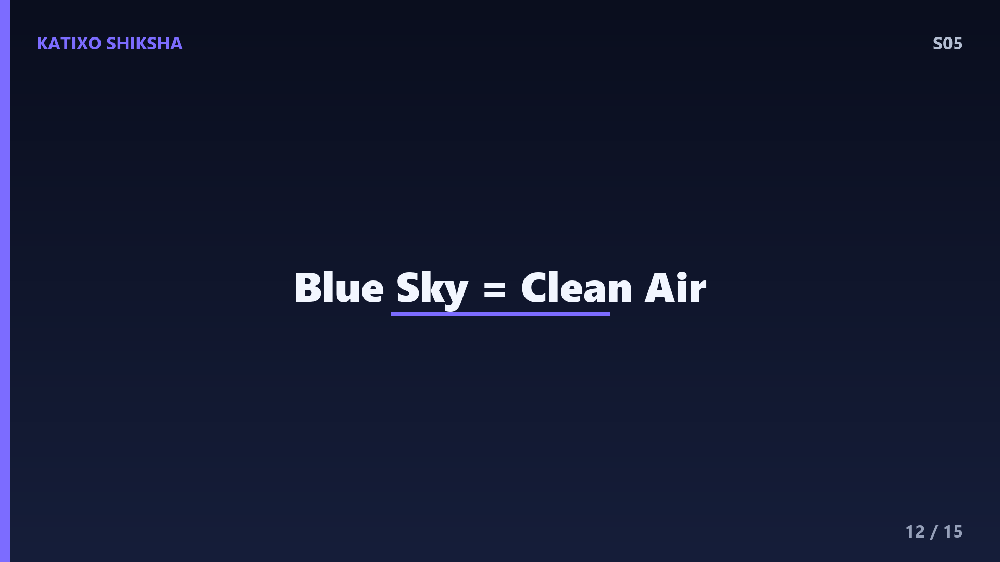
Slide 12Something practical — the colour of the sky actually tells you about air quality. A deep, vivid blue sky means the air is clean with mostly small gas molecules doing the scattering. A hazy, whitish sky means there are lots of larger particles — pollution, dust, smoke — causing Mie scattering that mixes in all colours. After heavy rain washes particulates out of the air, you often see the most intensely blue sky. Cities with heavy pollution rarely see deep blue skies. So next time you see a brilliant blue sky, appreciate it — it literally means the air you're breathing is cleaner.
Slide 13Test yourself! Question one — what is the relationship between scattering intensity and wavelength in Rayleigh scattering? Question two — why isn't the sky violet even though violet light has a shorter wavelength than blue? Question three — why are sunsets red and orange? Pause the video. Try answering without scrolling back. If you can answer from memory, that information is now in your long-term memory. That's how learning works.
Slide 14Answers! Question one — scattering intensity is inversely proportional to the fourth power of wavelength. Shorter wavelengths scatter dramatically more. Question two — two reasons: the sun emits more blue photons than violet, AND human eyes are more sensitive to blue than violet. It's physics plus biology. Question three — at sunset, sunlight travels through a much longer path of atmosphere. Blue light gets scattered away completely over this distance, leaving only longer wavelengths — red, orange, and yellow — to reach your eyes. If you got all three, you've mastered optics concepts that university students study.
Slide 15Final recap — sunlight is a mix of all colours with different wavelengths. Earth's atmosphere scatters shorter wavelengths much more due to Rayleigh scattering, which follows an inverse fourth-power law. Blue dominates over violet because of solar emission spectrum and human eye sensitivity. Sunsets are red because blue light is completely scattered away over the long atmospheric path. Different planets have different sky colours based on their atmospheric composition. One simple question — why is the sky blue — and the answer spans electromagnetic theory, atmospheric physics, and neuroscience of vision. That's science. This was our last episode of Season 1 — but Season 2 is coming with even wilder questions. Subscribe, share with friends, and keep asking why. Bye!